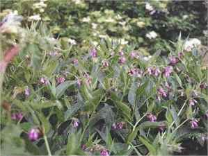

Comfrey

Symphytum officionale Fam: Boraginaceae
I first became interested in this plant as an animal feed - it was supposed to be able to be cut several times a year, and dried as a high-protein winter feed supplement. The plants themselves, all 100 of them, co-operated, but the weather didn't, and drying it was a disaster! However, the animals loved it cut green in the summer, so all was not lost.
Both my father and my grandfather used to eat a small leaf of comfrey as they left the house for work in the morning to prevent arthritis from setting in, and indeed, neither of them suffered from this affliction later in life. Comfrey has, of course, been used as a healing herb for a very long time. One of its more well-known uses in the past was as a 'plaster' for putting around broken bones, for which the root was pounded and made into a paste.
The list of beneficial substances in this plant is impressive. It has more protein in its leaves than any other plant, and it brings up minerals from great depths through its long taproot, sometimes as long as 10ft. The leaf and root contain allantoin, a cell proliferant, which is exceptional in its ability to help heal both flesh and bones. It is a good vegetable source of vitamin B12, a useful supplement for a vegan diet.
Leaves can be picked and dried in midsummer for use as a tea, to be used either on its own or mixed with other herbs, or conventional tea. It can also be added as a herb to soups and burgers. Fresh leaves can be cooked as spinach, but as with spinach, don't overdo it!
Roots can be dried in late autumn or winter, cleaned, chopped finely and dried. Leaf and root tea can be drunk for stomach ulcers and coughs. (Consult a herbalist for quantities )
I have made and used two healing preparations for external applications, and they work. The most interesting one is called 'Comfrey Oil'. For this, clean dry leaves, without midribs, are cut up small and packed really tightly into a coffee jar or similar. Really cram in as many as you can, and get rid of as much air as possible. Screw on the lid, and seal as tightly as possible with sellotape or wax. Label and date the jar, and wait two years. At the end of this time, there should be about two inches of an 'oily' looking liquid at the bottom of the jar. It may have a mould on top, but this can be peeled off. Pour this into a smaller jar and keep in the fridge. Use it as a skin healing oil.
The second ointment contains elder leaves as well as comfrey. Melt a pound of solid vegetable oil in a pan and stuff in as many comfrey and elder leaves as it will hold, removing midribs if there is time!! You will be surprised at just how many leaves you can get in as they shrivel in the warm oil. Simmer gently for about 20 mins, then allow to cool until you can put your hands in it. Squeeze out all the leaves as much as possible leaving a green liquid. Strain if liked, but it is not necessary. As the oil cools, keep stirring, and stir in about 100ml glycerine to make it easier to spread, then pot into smaller containers, label, and keep in the fridge.
Plant a line of comfrey at the edge of the garden, and very few perennial weeds will get past it - useful if the plot next door has something you don't want in yours!!
Comfrey, cut and wilted for 24 hours can be put in a potato trench at planting time. As it decays it provides an acidic environment which discourages common scab.
Soak the leaves in water for three or four weeks to make a wonderful, if smelly, liquid fertilizer which can be diluted about one in ten with water and sprayed as a foliar feed. Alternatively, stuff as many leaves as possible into any cylinder with a small hole made on the bottom, anything from a soft drinks bottle to a water butt. As the comfrey decays, a black liquid drips out of the bottom, and this does not smell as badly as with the water method. Dilute this one in twenty with water as a plant food. (Good for tomatoes).
I could go on - and on, but for anyone wishing more specific or generally interesting information about this wonderful 'herb', there is a book called 'Comfrey - past, present and future' by Lawrence D Hills and published by Faber, which is well worth looking at.


The Castle

Brigid's Garden

Moyra's Web Jewels